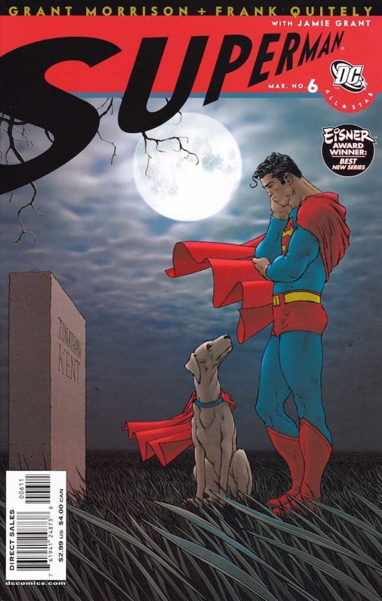
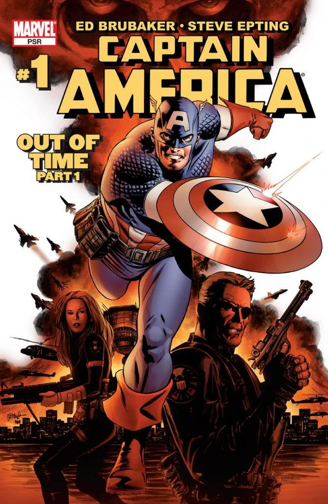
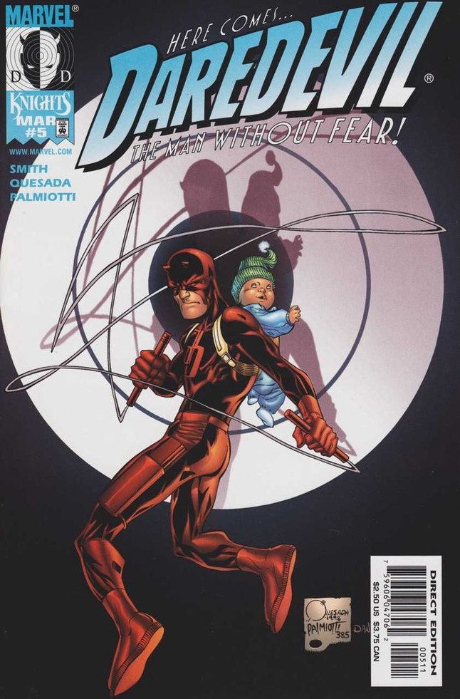
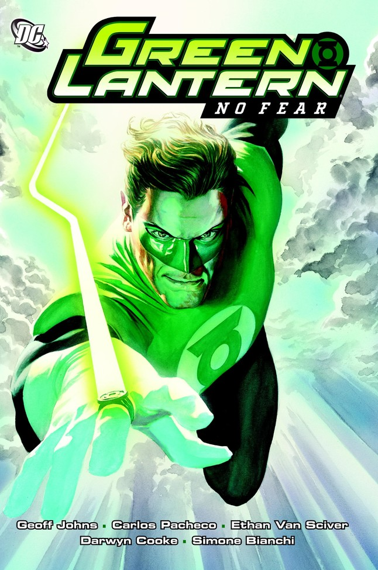
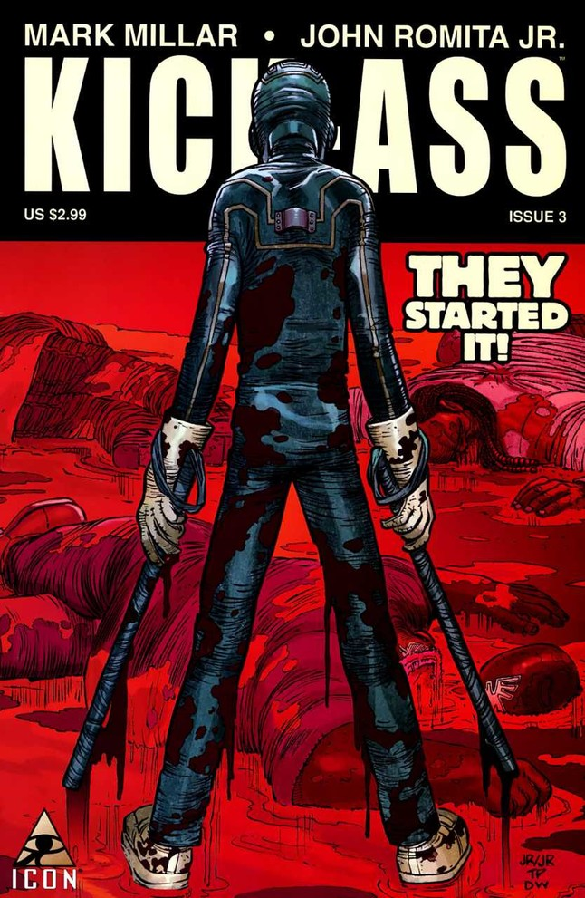
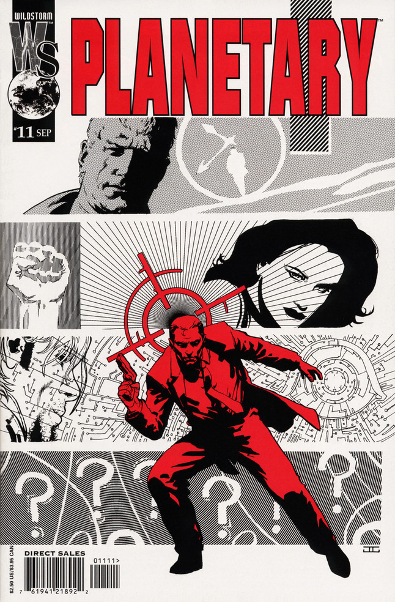

Superman
|  | Read More Captain Marvel OnlineSummary: While, for the most part, we avoided limited series (unless they got into the several tens of issues), we took exception for All-Star Superman, a brilliant magnum opus by Grant Morrison and Frank Quitely about what Superman does on a cosmic level and a personal one. With looks deep into the heart of everyday people affected by Superman, Superman himself, Lois, and even Lex Luthor, we reach a better understanding of how Superman sprung from a public consciousness that just needs a hero. If you can read this story and not fall in love with the character, well, you’re probably hellbent on taking over the world. |
Rate this comic:
HellBoy
 |
Read More HellBoy OnlineSummary: Mike Mignola had helped give a backstory to Rocket Raccoon and took Batman to a steampunk Gotham, but when he went to work on his own, his greatest comics work would be born. The mix of high fantasy, occult, Lovecraft-horror, and stories that took place in both the modern day and reached into European history all starred a very different kind of superhero called Hellboy This demon who might, you know, bring literal Hell to Earth wasn’t interested in the Nazis' plans – instead, he wanted to use his Right Hand of Doom to fight off the paranormal often with his pals in the BPRD at his side. The series helped to revive and mainstream horror comics as a genre, and has featured some of the most consistently high-level entertainment in the business for 24 years. |
Rate this comic:
100 Bullets
 |
Read More 100 Bullets OnlineSummary: Brian Azzarello and Eduardo Risso crafted an epic with a simple premise of revenge fantasy, which turned into an epic that twisted and turned through one of the best straight-up crime and conspiracy stories that comics have ever told. It was violent, turned completely on its head more than once, and had an honest look at morality and the consequences of every decision that still has us pondering. |
Rate this comic:
absolute Transmetropolitan
 |
Read More absolute Transmetropolitan OnlineSummary: Warren Ellis and Darick Robertson’s gonzo journalist Spider Jerusalem would absolutely not appreciate a list like this. He would probably tell us that looking at past successes is dooming us to future failures, or even tantamount to an admission that nothing better was on the way. But we love the series -- Spider’s constant and unending resistance against a lunatic despot is inspiring, and we’d gladly be insulted by him. |
Rate this comic:
Batman
 |
Read More batman OnlineSummary: While the New 52 as a whole was an experiment that not many would call a success (It’s okay, DC Rebirth fixed it), there was one comic that just kept kicking butt up and down Gotham City: Batman by Scott Snyder and Greg Capullo. The series got back to basics with Batman while at the same time deeply changing and evolving the mythology of Gotham as a character all its own. It reintroduced the Joker as a much more dangerous psychopath than we’d seen in years, but also told personal stories of family, fathers and sons, and whether Bruce Wayne could ever be whole again. |
Captain America
|  | Read More Captain America OnlineSummary: Ed Brubaker came into Marvel with a cadre of artists like Steve Epting, Michael Lark, and Mike Perkins (and more) and had the story to relaunch and revive Captain America: Do the unthinkable, and bring back Bucky Barnes. Bucky, along with Peter Parker’s Uncle Ben, was largely considered the only completely untouchable deaths in comics, but Brubaker pulled it off, and with flair. Heard of The Winter Soldier? Civil War? The Death of Captain America (and Bucky taking up the shield)? That’s all from this one run of comics. It inspired a couple pretty awesome movies, too. |
Rate this comic:
Dare Devil
|  | Read More daredevil OnlineSummary: The Marvel Knights era of Daredevil was such a drastic switch up and revitalization of the character, we have to include it. Kevin Smith and now Marvel CCO Joe Quesada relaunched the character under the Marvel Knights imprint, bringing old hornhead back to the streets in stories that featured religion, drugs, murder, suicide; a lot of things that superhero comics didn’t touch very often (especially in the ‘90s). When David Mack brought Brian Michael Bendis on board as his co-writer, Bendis would segue that into an epic run of his own on the series, teamed with artist Alex Maleev in giving readers the most noir and personal look they'd seen at Daredevil since Born Again. The modern Daredevil TV series owes a lot to that run, as does Marvel-Netflix as a whole. |
Rate this comic:
Green Lantern
|  | Read More green Lantern OnlineSummary: After bringing Hal Jordan back from the dead, Geoff Johns and Carlos Pacheco set out to make the Green Lanterns the very center of the DC Universe. The new volume of the ongoing series so drastically changed the DCU, it’s safe to say we wouldn’t see any comics published today from DC Comics the same way without it. It was here that Johns introduced the ideas of the emotional spectrum and more Corps of lanterns that could harness other emotions. It could very easily be argued that this storyline moved Johns into the level of prominence that now has him as Chief Creative Officer and President at DC Entertainment, and co-head of DC Films, so this one is as far-reaching as they come. It also happens to be damn good comics. |
Rate this comic:
kick-Ass
|  | Read More kickass OnlineSummary: Another Mark Millar creator-owned joint, this one hit big with both comic readers and movie-goers. The comic gave us a new look at people becoming vigilante superheroes in a world that’s otherwise very much like ours. The real reason this made the list, though, is Hit-Girl, the youngest vigilante, who also happens to be an incredible trained killer. She became a star on her own, both in the films and comics (and her own spin-off). Wait, should we retitle this entry? |
Rate this comic:
planetary
|  | Read More planetary OnlineSummary: Yes, everyone loves that other deconstruction of superheroes, but for our money, Planetary, which systematically took apart every era of the superhero genre at the genius hands of Warren Ellis, John Cassaday, and Laura Martin, is where the heart of superheroics lies. Planetary looked at how superheroes affect the real world through the lens of a world where they truly exist but maybe shouldn’t. It’s a story that’s so singularly and uniquely comics, it couldn’t be told the same way in any other medium. |
Rate this comic: